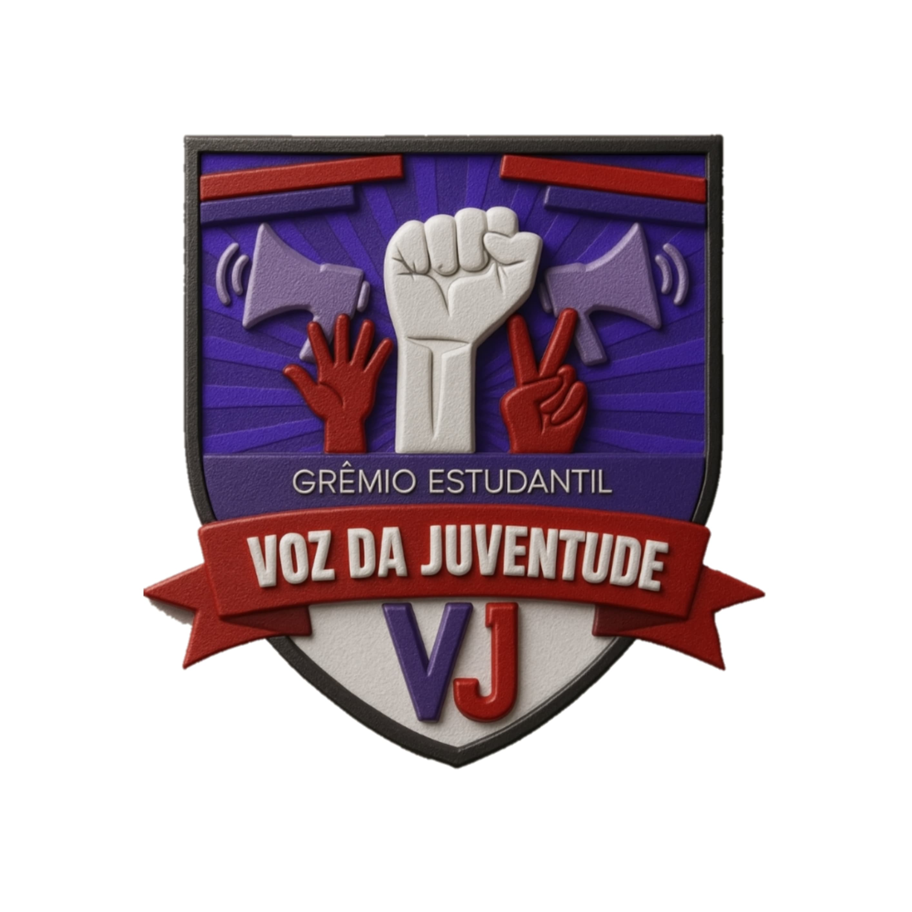
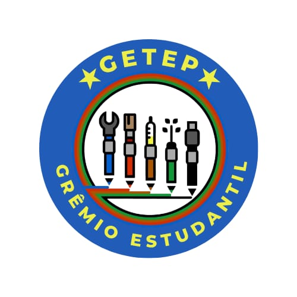
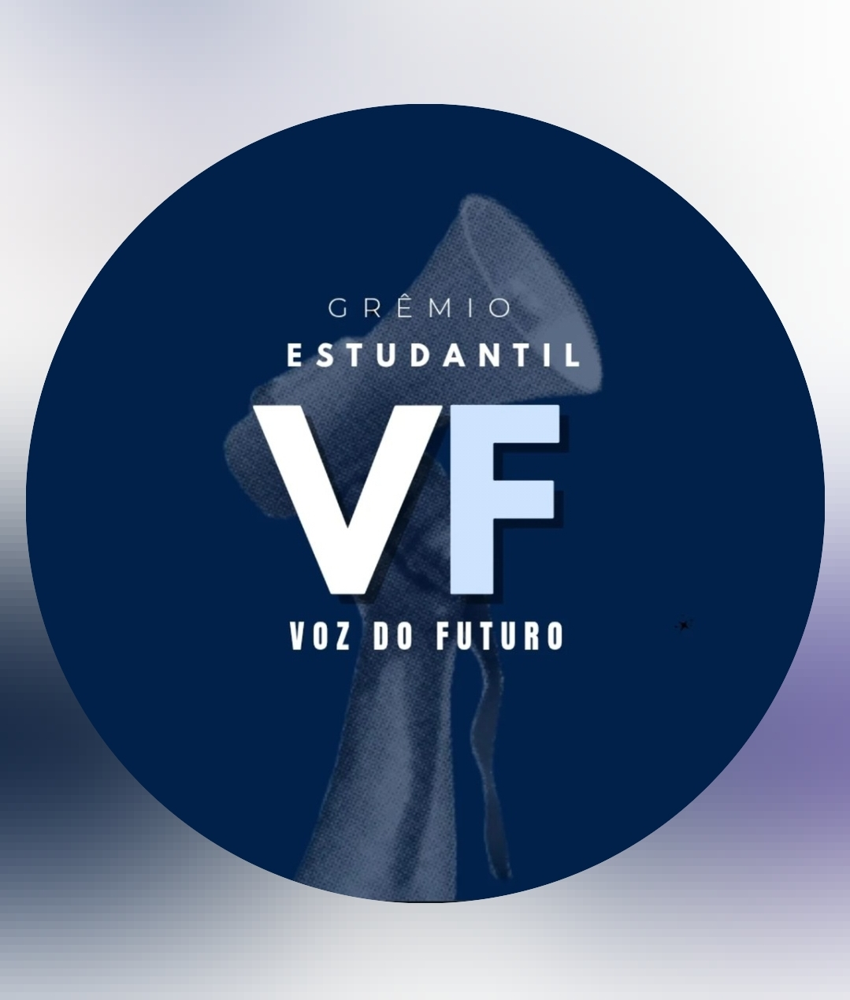

União Municipal dos e das Estudantes de Paulo Afonso – Bahia
Gestão: Nada Para Nós, Sem Nós!
Seja FiliadoA União Municipal dos e das Estudantes de Paulo Afonso (UMESPA) é a entidade que representa os estudantes do município, articulando grêmios estudantis, DAs, CAs e DCEs, promovendo a participação juvenil e defendendo os direitos da juventude nas escolas e na sociedade.
A UMESPA atua no fortalecimento do movimento estudantil, incentivando a organização dos estudantes, a criação de grêmios, DAs, CAs e a participação democrática dentro das escolas.
A UMESPA nasce da necessidade de fortalecer a organização dos estudantes de Paulo Afonso, criando um espaço coletivo de representação, mobilização e participação política da juventude.
Ao longo de sua atuação, a entidade tem contribuído para a formação política dos estudantes, o fortalecimento dos grêmios estudantis e a construção de uma educação mais democrática e participativa.
Reúna estudantes interessados em organizar o movimento estudantil na escola e formar uma comissão provisória.
Realize uma assembleia geral com os estudantes para discutir a criação do grêmio e aprovar o estatuto.
Organize eleições democráticas para escolher a diretoria do grêmio estudantil.
Após criado, o grêmio pode se filiar à UMESPA e fortalecer o movimento estudantil municipal.
Colégio Estadual Carlina Barbosa de Deus
📧 E-mail: gremio.upe.carlina@gmail.com
@gremioupeeColégio Estadual Paulo Freire
📧 E-mail: umespa.nte24@gmail.com
@gremio.juntosomosmais
Colégio Estadual de Tempo Integral de Paulo Afonso - CETIPA
📧 E-mail: umespa.nte24@gmail.com
@voz.da.juventude__
Centro Territorial de Educação Profissional ltaparica I - CETEPI I
📧 E-mail: umespa.nte24@gmail.com
@gremio.cetep
Centro Territorial de Educação Profissional ltaparica II - Wilson Pereira - CETEPI II
📧 E-mail: umespa.nte24@gmail.com
@gremio_estudantil.vfColégio Estadual de Tempo Integral Quitéria Maria de Jesus
📧 E-mail: umespa.nte24@gmail.com
@portal_jpm📧 E-mail: umespa.nte24@gmail.com
📱 WhatsApp: (75) 99163-1834
📸 Instagram: @umes.pa